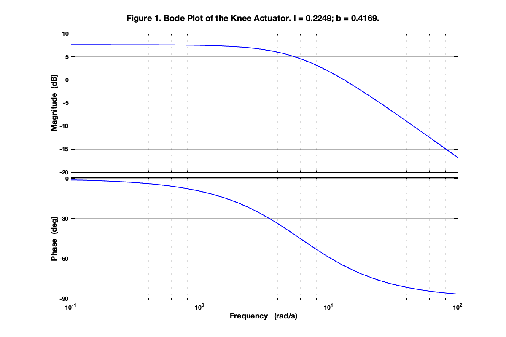
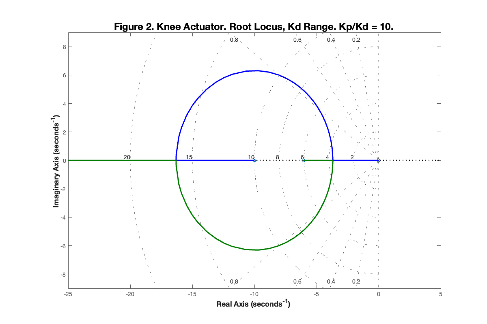
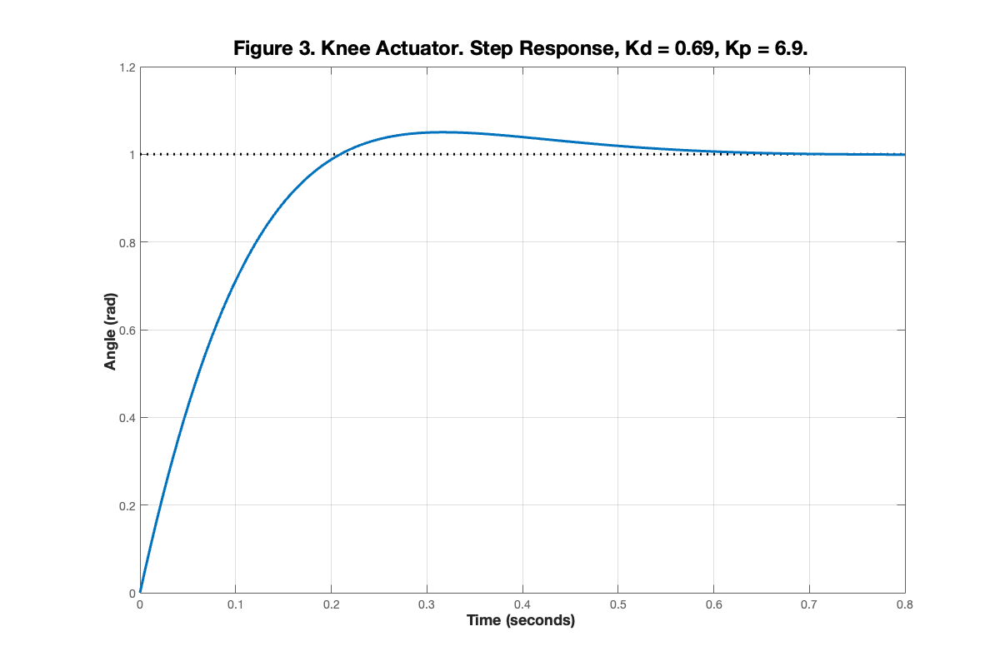
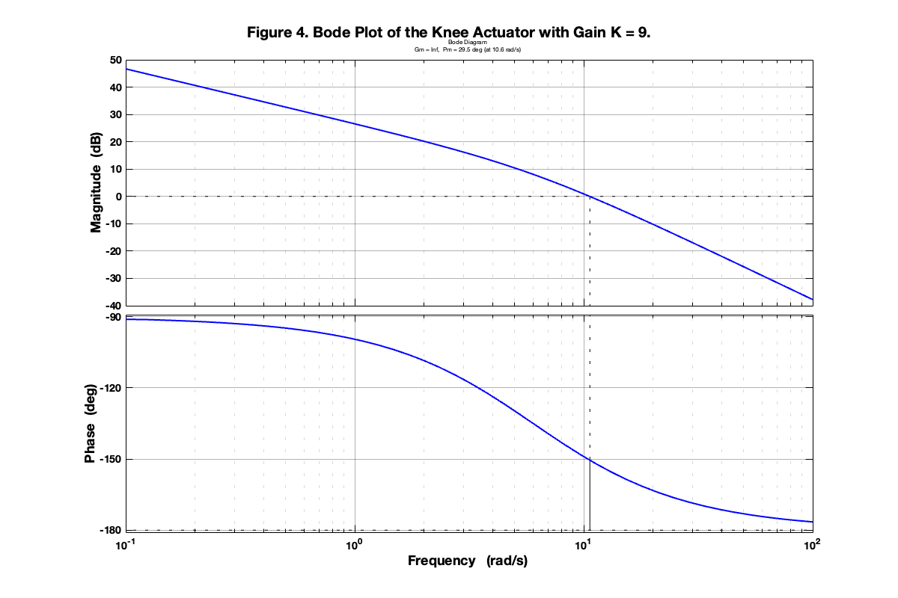
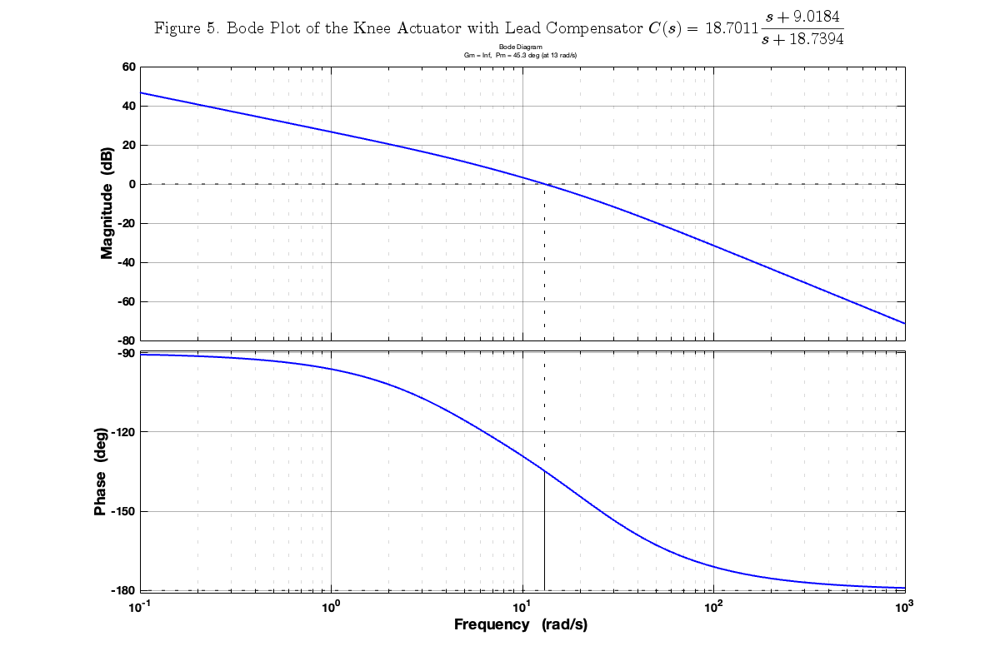
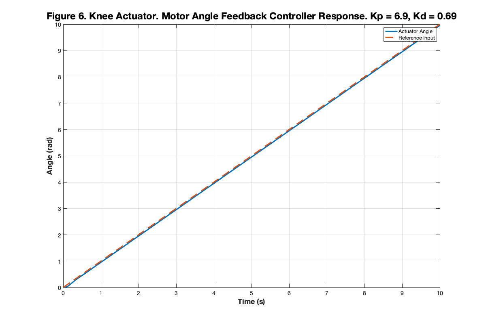

ROB599_HW5
Analyzing the dynamics of knee actuator
Contents
- Clean Up
- Problem 1A: Determine the system parameters
- Problem 1B: Bode Plot of the Actuator
- Problem 2A: Determine the Transfer Function of the Plant from Torque to Angle
- Problem 2B: Plot the Root Locus & Step Response
- Problem 2C: Design Lead Compensator
- Problem 2D: Create a Simulink Model and Simulate Ramp Input Signal
Clean Up
close all
clear
clc
Problem 1A: Determine the system parameters
% Define the system variables syms s syms I b syms G_s plant_tf = 1/(I*s + b); % Evaluate at DC Gain G_s_0 = 10^(7.6/20); plant = subs(plant_tf, s, 0); equation = abs(plant) == G_s_0; b_eval = eval(solve(equation, b)) % Evaluate at Cutoff Frequency G_s_omega = 10^(4.6/20); wc = 6; equation = sqrt(1/((I*wc)^2 + b_eval^2)) == G_s_omega; I_eval = abs(eval(solve(equation, I))); I_eval = I_eval(1) % two solutions, pick the positive one
b_eval =
0.4169
I_eval =
0.0693
Problem 1B: Bode Plot of the Actuator
% Defining the Transfer Function of the Actuator TF = tf([1], [I_eval b_eval]); % Plot the Bode plot figure('Position', [100, 100, 1200, 800]); % Create Bode plot opts = bodeoptions; opts.Grid = 'on'; opts.FreqUnits = 'rad/s'; opts.PhaseWrapping = 'off'; opts.Title.String = ''; % Remove "Bode Diagram" text opts.XLabel.String = 'Frequency (rad/s)'; % Set custom x-label bodeplot(TF, opts) % Get the axes handles h = gcf; axesObjs = findobj(h, 'Type', 'axes'); % Set the properties for the Bode plot lines bodePlotLines = findobj(h, 'Type', 'line'); set(bodePlotLines, 'LineWidth', 2, 'Color', 'blue'); % Set the properties for the axes for i = 1:length(axesObjs) set(axesObjs(i), 'FontSize', 14, 'FontWeight', 'bold'); grid(axesObjs(i), 'on'); set(axesObjs(i), 'GridAlpha', 0.3); set(axesObjs(i), 'MinorGridAlpha', 0.15); set(axesObjs(i), 'XScale', 'log'); end % Hide all default titles and text delete(findobj(h, 'Type', 'text')); % Set the title and labels sgtitle('Figure 1. Bode Plot of the Knee Actuator. I = 0.2249; b = 0.4169.', 'FontSize', 20, 'FontWeight', 'bold'); xlabel(axesObjs(2), 'Frequency ', 'FontSize', 18, 'FontWeight', 'bold'); % Only lower plot set(get(axesObjs(1), 'XLabel'), 'String', ''); % Remove x-label from upper plot ylabel(axesObjs(2), 'Magnitude ', 'FontSize', 18, 'FontWeight', 'bold'); ylabel(axesObjs(1), 'Phase ', 'FontSize', 18, 'FontWeight', 'bold'); print(gcf, 'Figure 1. Bode Plot of the Knee Actuator.png', '-dpng', '-r300');
Problem 2A: Determine the Transfer Function of the Plant from Torque to Angle
plant = tf([1], [I_eval b_eval 0])
plant =
1
----------------------
0.06931 s^2 + 0.4169 s
Continuous-time transfer function.
Problem 2B: Plot the Root Locus & Step Response
% kp/kd = 10 controller = tf([1 10], [1]) L = controller * plant % Plot the Root Locus figure('Color', 'white', 'Position', [100, 100, 1200, 800]); rlocus(L) axis([-25 5 -9, 9]); set(gca, 'FontSize', 14); set(findall(gca, 'Type', 'Line'),'LineWidth', 3); sgrid([0.2, 0.4, 0.6, 0.8], [2, 4, 6, 8, 10, 15, 20]); title('Figure 2. Knee Actuator. Root Locus, Kd Range. Kp/Kd = 10.', 'FontWeight', 'bold', 'FontSize', 24); xlabel('Real Axis', 'FontWeight', 'bold', 'FontSize', 18); ylabel('Imaginary Axis', 'FontWeight', 'bold', 'FontSize', 18); grid on; box on; print(gcf, 'Figure 2. Root Locus of Knee Actuator Controller.png', '-dpng', '-r300'); % Analyze the Step Response % Define the closed loop system kd = 0.69; % from the root locus kp = 10 * kd; controller = tf([kd kp], [1]); CL = feedback(controller * plant, 1) % Plot the Step Response figure('Color', 'white', 'Position', [100, 100, 1200, 800]); step(CL) set(gca, 'FontSize', 14); set(findall(gca, 'Type', 'Line'),'LineWidth', 3); title('Figure 3. Knee Actuator. Step Response, Kd = 0.69, Kp = 6.9.', 'FontWeight', 'bold', 'FontSize', 24); xlabel('Time', 'FontWeight', 'bold', 'FontSize', 18); ylabel('Angle (rad)', 'FontWeight', 'bold', 'FontSize', 18); grid on; box on; print(gcf, 'Figure 3. Step Response of Knee Actuator Controller.png', '-dpng', '-r300');
controller =
s + 10
Continuous-time transfer function.
L =
s + 10
----------------------
0.06931 s^2 + 0.4169 s
Continuous-time transfer function.
CL =
0.69 s + 6.9
---------------------------
0.06931 s^2 + 1.107 s + 6.9
Continuous-time transfer function.
  Problem 2C: Design Lead Compensator
% Define the desired characteristics PM_d = 45; e_SS = 0.05; % Evaluated Queantities from the Bode Plot of the Plant with Gain K K = 9; % K>8.337 ensures e_ss < 0.05 % Plot the Bode plot of the plant with gain K figure('Position', [100, 100, 1200, 800]); % Create Bode plot opts = bodeoptions; opts.Grid = 'on'; opts.FreqUnits = 'rad/s'; opts.PhaseWrapping = 'off'; opts.Title.String = ''; % Remove "Bode Diagram" text opts.XLabel.String = 'Frequency (rad/s)'; % Set custom x-label margin(K * plant, opts) % Get the axes handles h = gcf; axesObjs = findobj(h, 'Type', 'axes'); % Set the properties for the Bode plot lines bodePlotLines = findobj(h, 'Type', 'line'); set(bodePlotLines, 'LineWidth', 2, 'Color', 'blue'); % Set the properties for the axes for i = 1:length(axesObjs) set(axesObjs(i), 'FontSize', 14, 'FontWeight', 'bold'); grid(axesObjs(i), 'on'); set(axesObjs(i), 'GridAlpha', 0.3); set(axesObjs(i), 'MinorGridAlpha', 0.15); set(axesObjs(i), 'XScale', 'log'); end % Hide all default titles and text delete(findobj(h, 'Type', 'text')); % Set the title and labels sgtitle('Figure 4. Bode Plot of the Knee Actuator with Gain K = 9.', 'FontSize', 20, 'FontWeight', 'bold'); xlabel(axesObjs(2), 'Frequency ', 'FontSize', 18, 'FontWeight', 'bold'); % Only lower plot set(get(axesObjs(1), 'XLabel'), 'String', ''); % Remove x-label from upper plot ylabel(axesObjs(2), 'Magnitude ', 'FontSize', 18, 'FontWeight', 'bold'); ylabel(axesObjs(1), 'Phase ', 'FontSize', 18, 'FontWeight', 'bold'); print(gcf, 'Figure 4. Bode Plot of the Knee Actuator with Gain K = 9.png', '-dpng', '-r300'); % Noting from Bode Plot PM_c = 29.5; wm = 13.0; % Computing corresponding zc and pc phi_m = PM_d - PM_c + 5; a = (1 - sind(phi_m)) / (1 + sind(phi_m)); CrossGain = 20*log10(sqrt(a)); zc = - wm * sqrt(a); pc = zc / a; C_s = tf(K*pc/zc*[1 -zc], [1 -pc]) % Plot the Bode Plot of the System with Lead Compensator % Create Bode plot figure('Position', [100, 100, 1200, 800]); opts = bodeoptions; opts.Grid = 'on'; opts.FreqUnits = 'rad/s'; opts.PhaseWrapping = 'off'; opts.Title.String = ''; % Remove "Bode Diagram" text opts.XLabel.String = 'Frequency (rad/s)'; % Set custom x-label margin(C_s * plant, opts) % Get the axes handles h = gcf; axesObjs = findobj(h, 'Type', 'axes'); % Set the properties for the Bode plot lines bodePlotLines = findobj(h, 'Type', 'line'); set(bodePlotLines, 'LineWidth', 2, 'Color', 'blue'); % Set the properties for the axes for i = 1:length(axesObjs) set(axesObjs(i), 'FontSize', 14, 'FontWeight', 'bold'); grid(axesObjs(i), 'on'); set(axesObjs(i), 'GridAlpha', 0.3); set(axesObjs(i), 'MinorGridAlpha', 0.15); set(axesObjs(i), 'XScale', 'log'); end % Hide all default titles and text delete(findobj(h, 'Type', 'text')); % Set the title and labels controllerTF = "$$C(s) = " + num2str(K*pc/zc) + "\frac{s + " + num2str(-zc) + "}{s + " + num2str(-pc) + "}$$"; sgtitle('Figure 5. Bode Plot of the Knee Actuator with Lead Compensator ' + controllerTF, 'FontSize', 20, 'FontWeight', 'bold', 'Interpreter', 'latex'); xlabel(axesObjs(2), 'Frequency ', 'FontSize', 18, 'FontWeight', 'bold'); set(get(axesObjs(1), 'XLabel'), 'String', ''); ylabel(axesObjs(2), 'Magnitude ', 'FontSize', 18, 'FontWeight', 'bold'); ylabel(axesObjs(1), 'Phase ', 'FontSize', 18, 'FontWeight', 'bold'); print(gcf, 'Figure 5. Bode Plot of the Knee Actuator with Lead Compensator.png', '-dpng', '-r300');
C_s =
18.7 s + 168.7
--------------
s + 18.74
Continuous-time transfer function.
  Problem 2D: Create a Simulink Model and Simulate Ramp Input Signal
% Recall the transfer function of the system C_s = tf(K*pc/zc*[1 -zc], [1 -pc]); P_s = plant; % Run the Simulink Model simOut = sim('ROB599_HW5_P2D', 'SimulationMode', 'normal', 'StopTime', '10'); % Get the Step Response Data (Motor Angle Feedback) refSignalTime = simOut.ref_signal.Time; refInput = simOut.ref_signal.Data; % Get the Step Response (Load Angle Feedback) simResponseTime = simOut.theta.Time; simResponse = simOut.theta.Data; % Create Figure for Motor Angle Feedback Step Response figure('Color', 'white', 'Position', [100, 100, 1200, 800]); plot(simResponseTime, simResponse, 'LineWidth', 3); hold on; set(gca, 'FontSize', 14); plot(refSignalTime, refInput, '--', 'LineWidth', 3); title('Figure 6. Knee Actuator. Motor Angle Feedback Controller Response. Kp = 6.9, Kd = 0.69', 'FontWeight', 'bold', 'FontSize', 24); xlabel('Time (s)', 'FontWeight', 'bold', 'FontSize', 18); ylabel('Angle (rad)', 'FontWeight', 'bold', 'FontSize', 18); legend('Actuator Angle', 'Reference Input'); grid on; box on; % Save motor angle feedback plot print(gcf, 'Figure 6. Knee Actuator. Motor Angle Feedback Controller Response.png', '-dpng', '-r300');